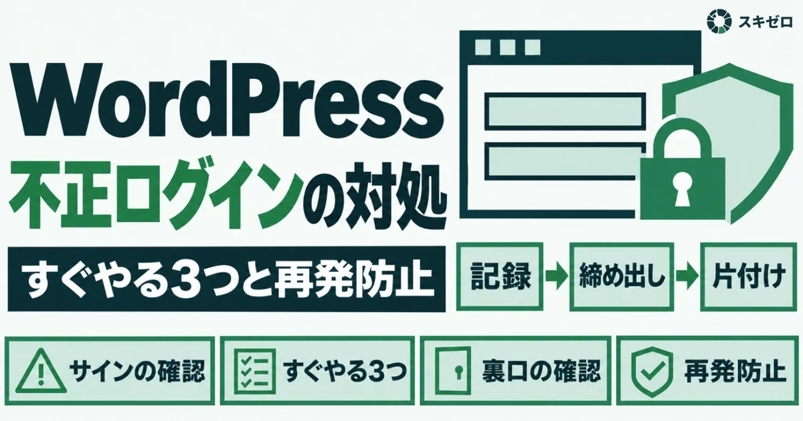
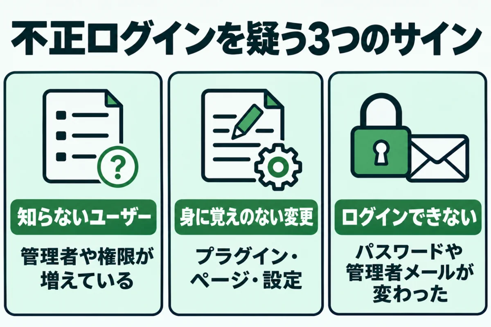
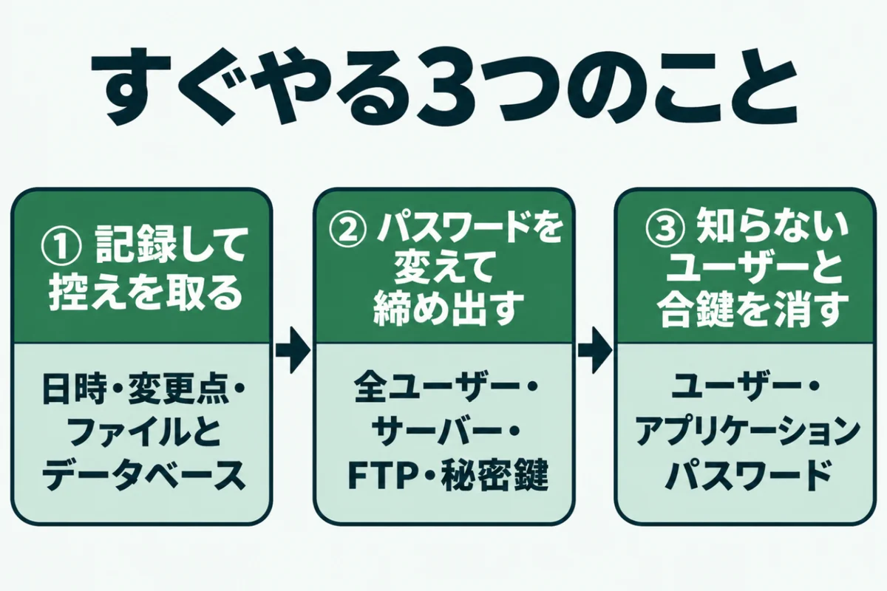
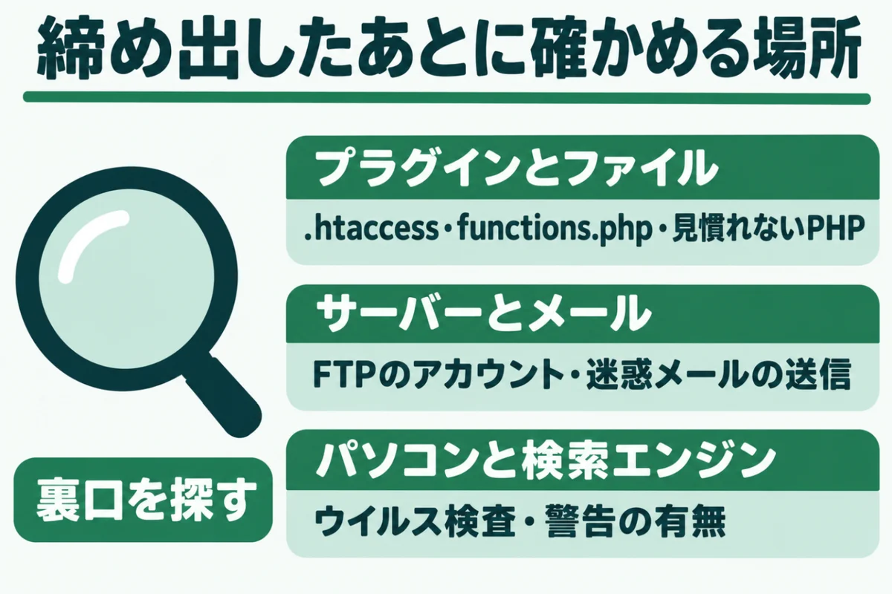
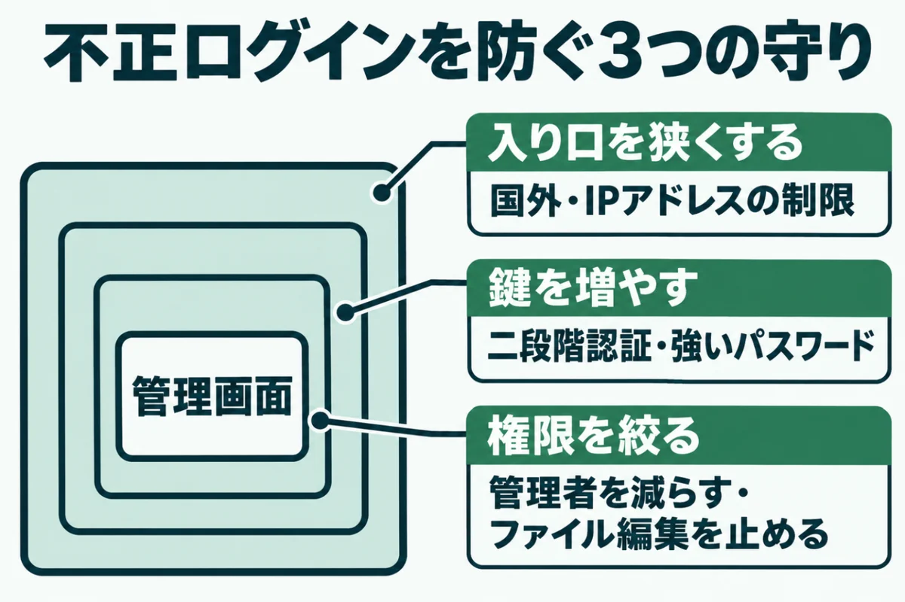
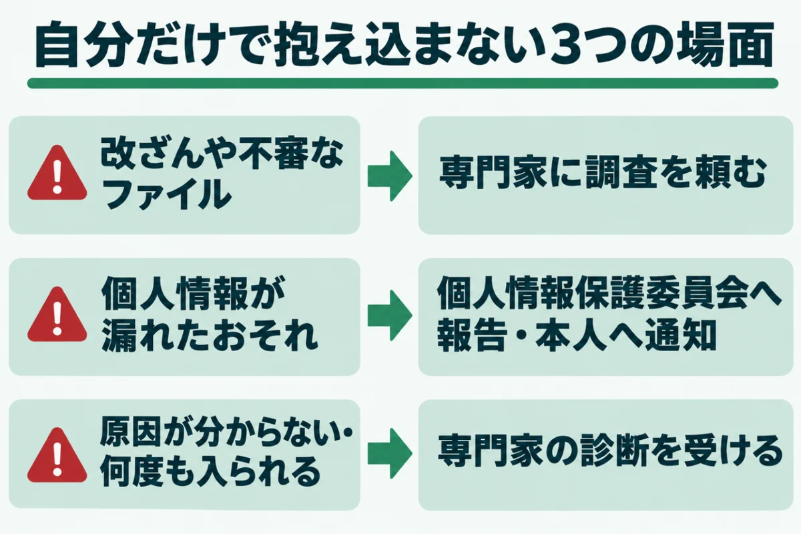

WordPressの管理画面に不正ログインされたときの対処すぐやる3つと再発防止

「見覚えのないユーザーがいる」「いつものパスワードで入れない」と、不安になっていませんか？
管理画面に入られると、ページの書き換えや不正なファイルの設置まで自由にできてしまいます。一方で、最初の対応を落ち着いて進めれば、被害の広がりは抑えられるものです。
この記事では、不正ログインに気づいたときにすぐやることを順番に整理しました。再発を防ぐ設定と、専門家に頼む目安もまとめています。
内容は、WordPressの公式の手引きなどを2026年11月14日に確かめたものです。運営者が自社サイトと取引先のサイトで対応した経験も入れました。
WordPressに不正ログインされたかを確かめるサイン

WordPressへの不正ログインは、持ち主に気づかれないよう静かに行われることが多くあります。入った側は、見つからないまま長く使い続けたいからです。
管理画面のふだんと違う小さな変化を見逃さないことが、最初の一歩になります。確かめたいサインを、3つに分けました。サーバーの記録で分かることもありますが、まずは管理画面で確かめられる点から見ていきます。
知らないユーザーや権限の変更
まず、管理画面の「ユーザー」の一覧を開いてください。見覚えのない名前や、最近作られた管理者がいないかを確かめます。
攻撃する側は、後で戻ってくるための入り口として、別のユーザーを足すことがあるのです。権限が編集者から管理者に変わっていることにも注意してください。
運営者の自社サイトでも、心当たりのない編集者のアカウントが、2つも見つかりました。どちらも、投稿を管理者に引き継いでから削除しています。
身に覚えのない投稿・プラグイン・設定
次に、投稿と固定ページ、プラグインの一覧を見直します。入れた覚えのないプラグインや、更新日が最近になっている古いページは怪しいサインです。
検索結果から来たときだけ、別のサイトに飛ばされる例もあります。自分で開いたときは普通に見えるので、気づくのが遅れがちです。スマホや別の回線から開いて確かめる方法もあります。
改ざんの見分け方は、ホームページが改ざんされたかも？確認したい7つのサインと自分でできる確かめ方にまとめました。
ログインできない・管理者のメールが変わった
いつものパスワードで入れなくなったときは、パスワードを変えられた可能性があります。設定の「管理者メールアドレス」が別のものに変わっていないかも確かめてください。
メールアドレスを変えられると、パスワードの再設定のメールも相手に届いてしまいます。自分で入れないときは、サーバー側から確かめるのが次の手です。
WordPressの公式の手引きは、データベースから直接パスワードを直す方法も紹介しています。手順は難しくないものの、間違えるとサイトが動かなくなるので注意してください。
WordPressに不正ログインされたらすぐやる3つのこと

不正ログインに気づいたら、慌てて手当たりしだいに消す前に、順番を決めて動きます。WordPressの公式の手引きも、落ち着いて記録を取ることから始めるよう勧める内容です。
記録、締め出し、片付けの順で進めると、手戻りが少なくなります。それぞれの中身を確かめてください。どの作業も、終わった時刻と内容を記録に足していくと後で役立ちます。
① 今の状態を記録して控えを取る
まず、気づいた日時と、おかしいと感じた点をメモに残します。最近入れたプラグインや、変えた設定も一緒に書き出してください。
そのうえで、今の状態のままファイルとデータベースの控えを取ります。おかしい状態のままでも、先に控えを残すのが公式の手引きの順番です。控えはサーバーの中だけでなく、自分のパソコンにも残しておきましょう。
原因を調べるときや、専門家に頼むときの手がかりになります。片付けで消してしまった証拠は、あとから取り戻せないからです。
② すべてのパスワードを変えて締め出す
次に、WordPressのすべてのユーザーのパスワードを変えます。サーバーの管理画面、FTP、データベースのパスワードも対象です。
プロフィール画面には、ほかの場所のログインをまとめて切るボタンもあります。さらに、wp-config.phpの秘密鍵を新しくすれば、全員のログインをまとめて切れるのです。
公式の手引きは、きれいにしたあとにもう一度パスワードを変えるよう勧めています。その間は、サイトを一時的にメンテナンス表示にしておくのも1つの手です。
③ 知らないユーザーと合鍵を消す
最後に、見覚えのないユーザーを消します。消すときは、そのユーザーの投稿を自分のアカウントに引き継ぐ設定を選んでください。
あわせて、各ユーザーのプロフィールにあるアプリケーションパスワードも確かめます。外部から投稿するための合鍵なので、使っていないものはすべて取り消してください。
運営者の自社サイトの点検でも、使わなくなったアプリケーションパスワードが残っていました。作った人も用途も分からないものは、迷わず取り消して問題ありません。
WordPressの不正ログインのあとに確かめる場所

パスワードを変えて締め出しても、それで終わりではありません。入られている間に、後から戻るための仕掛けを残されていることがあるからです。
見える場所を直しても、裏口が残っていれば同じことがくり返されます。確かめたい場所を、3つに分けました。見た目が元に戻っていても、中に残った仕掛けが動き続ける例もあります。1つずつ順に確かめてください。
追加されたプラグインと書き換えられたファイル
公式の手引きは、重点的に確かめるファイルを挙げています。.htaccess、index.php、header.php、functions.phpなどです。
本体のファイルは、同じ版の公式のファイルで置き換える方法が示されています。見慣れない名前のPHPファイルが増えていないかも、サーバーのファイル一覧で確かめてください。
自分で判断できないファイルは、消す前に控えを取っておきましょう。入れた覚えのないプラグインは、停止してから中身を確かめてください。
サーバーやFTP・メールのアカウント
WordPressの外にある入り口も見直します。サーバーの管理画面で、知らないFTPのアカウントが増えていないかを確かめてください。
勝手に作られたメールアドレスから、迷惑メールが送られることもあるのです。サーバー会社にも連絡し、ほかに異常がないかを聞いておきましょう。
公式の手引きも、サーバー会社に相談する手順を入れています。メール送信用のIPアドレスが迷惑メールの一覧に載っていないかも、一緒に聞くと安心です。
自分のパソコンと検索エンジンの警告
パスワードが盗まれた原因が、自分のパソコンにあることもあります。ウイルス対策ソフトで、管理画面を開くパソコンを一通り検査してください。
あわせて、検索エンジンに危険なサイトとして登録されていないかも確かめます。Search Consoleのセキュリティの項目に、警告が出ていないかを見るのが手軽です。警告が出ていたら、片付けたあとに審査をお願いする手続きが必要になります。Bingにも同じような管理ツールがあるので、あわせて登録しておきましょう。
WordPressの不正ログインを防ぐ設定

片付けが済んだら、同じ入られ方をしないための設定に移ります。不正ログインは、パスワードを機械で次々に試す総当たりや、使い回しから起こることが少なくありません。
入り口を狭くし、鍵を増やし、権限を絞るの3つで考えてください。どれも、一度設定すれば効き続けるものです。反対に、片付けだけで終えると、同じ手口でまた入られるおそれが残ります。
二段階認証と強いパスワード
公式の手引きは、推測されにくいパスワードと、二段階認証を足すことを勧めています。二段階認証は、パスワードに加えてスマホのアプリなどに出る数字を入れる仕組みです。
WordPressの本体には入っていないので、プラグインで足すことになります。パスワードを盗まれても、それだけでは入れない状態にできるのが利点です。
ほかのサービスと同じパスワードを使い回すことは避けてください。管理者だけでなく、すべてのユーザーに設定すると効果が上がります。
サーバー側でログイン画面への入り口を絞る
レンタルサーバーの設定で、ログイン画面に入れる相手を絞るのも有効です。エックスサーバーには、国外からの管理画面へのアクセスを止める設定があります。
2026年6月には、登録したIPアドレスからだけ管理画面に入れる機能も加わりました。決まった場所からしか更新しないなら、試す価値は大きいはずです。
ログインの試行回数を制限するプラグインを入れる方法もあります。ただし、出先から更新することがあるなら、許可する場所を先に登録しておきましょう。
管理者を減らし、ファイル編集を止める
管理者の権限を持つユーザーは、必要な人だけに絞ります。記事を書くだけの人は、編集者や投稿者の権限で足りるはずです。
公式の手引きは、wp-config.phpでファイル編集を止める設定も紹介しています。管理画面からプログラムを書き換えられなくなるので、入られたときの被害が小さくなるのです。
ログイン名を外から読めないようにする対策も、あわせて進めてください。WordPressのユーザー名が漏洩する5つの経路と隠し方｜見えているかの確かめ方も参考になります。
- 参考：Hardening WordPress｜Developer.WordPress.org
- 参考：WordPress管理画面へのアクセス元を限定できる「IPアドレス制限」機能追加のお知らせ｜エックスサーバー
WordPressの不正ログインで専門家や窓口に頼るべきとき

不正ログインは、自分で片付けられることもあれば、専門家に任せたほうがよいこともあります。判断を誤ると、気づかないうちに被害が広がってしまうのです。
自分だけで抱え込まない目安を、3つの場面で確かめてください。迷ったときは、早めに相談したほうが結果として手間も費用も小さく済みます。相談先は、サーバー会社、制作会社、セキュリティの専門家などです。
改ざんや不審なファイルが見つかった
ページの書き換えや、見慣れないPHPファイルが見つかったときは、専門家に頼む時期です。裏口が1つでも残っていると、片付けてもすぐに戻られてしまいます。
どこから入られたかを突き止めないと、同じ穴がふさがらないからです。公式の手引きも、攻撃の経路を調べて同じ手口を防ぐことを手順に入れています。
復旧の流れは、ホームページ改ざんの復旧手順｜発見から再発防止までにまとめました。復旧と並行して、検索エンジンへの再審査の手続きも進めてください。
個人情報が漏れたおそれがある
お問い合わせの中身や会員の情報を見られたかもしれないなら、話は別です。個人情報が漏れたおそれがあれば、国への報告が必要になる場合があります。
対象は、要配慮個人情報や1,000人を超える漏えい、不正の目的による漏えいなど4つの場合です。報告は、事態を知ってから概ね3〜5日以内に行うよう求められています。
不正アクセスの場合は、警察やIPAへの連絡も促されているのです。迷ったら、早めに委員会の案内を確かめてください。
原因が分からない、何度も入られる
パスワードを変えても、また同じように入られるときは、原因が別の場所にある可能性があります。使っているプラグインの弱点や、サーバーの設定が入り口になっていることもあるのです。
同じことが2回起きたら、自分で片付けるのをやめるくらいの気持ちでいてください。このサイトの詳細診断では、管理画面のユーザーと権限、サーバーの設定まで確かめています。
診断の違いは、ホームページのセキュリティ診断とは？無料と有料の違いと選び方で紹介しました。
URLを入れるだけで、ログイン名の丸見えや古いプログラムなど8項目を無料で判定します。登録はいりません。
無料で診断するWordPressの不正ログインに関するよくある質問
管理画面に入れなくなりました。まず何をすればいいですか？
まず、ログイン画面の「パスワードをお忘れですか？」から再設定を試してください。メールが届かないときは、管理者メールアドレスを変えられている可能性があります。
その場合は、サーバーの管理画面からデータベースに入り、パスワードを直すのが次の手です。操作に自信がなければ、サーバー会社や制作会社に相談してください。
不正ログインされたら、WordPressを入れ直したほうがいいですか？
入れ直しだけでは、データベースやアップロードしたファイルに残った仕掛けは消えません。公式の手引きは、本体のファイルを同じ版の公式のファイルで置き換える方法を示しています。
管理画面の再インストールの機能は使わないよう書かれている点に注意してください。テーマやプラグインも、公式の配布元から入れ直すのが安全です。
ログインの試行回数の制限だけで、不正ログインは防げますか？
回数の制限は、総当たりで次々に試す攻撃には効果があります。ただ、使い回しのパスワードを最初から知られていると、少ない回数で入られてしまうのです。
二段階認証や、管理画面に入れる場所を絞る設定と組み合わせてください。サーバー側で制限をかけられる場合もあります。どれか1つに頼らず、重ねて守るのが基本です。
不正ログインされたことを、お客さまに知らせる必要はありますか？
訪問者や会員の個人情報が漏れたおそれがあるなら、本人への通知が必要になる場合があります。報告の対象になる事態では、委員会への報告と本人への通知の両方が義務です。
対象かどうか迷うときは、委員会の案内や専門家に確かめてください。個人情報が関わらない書き換えだけでも、お知らせを出すと信頼を保ちやすくなります。
不正ログインを防ぐために、日ごろからできることはありますか？
本体とプラグインを最新に保ち、使っていないプラグインやユーザーを消しておくことです。バックアップを、サーバーとは別の場所にも定期的に残しておくと立て直しが早くなります。
月に1度は、ユーザーの一覧とアプリケーションパスワードを見直してください。ログインを知らせるプラグインを入れると、不審な入り方に早く気づけます。外からの点検なら、このサイトの無料簡易診断が手軽です。
まとめ
WordPressの不正ログインに気づいたら、慌てて消す前に、今の状態を記録して控えを取ります。次に、すべてのパスワードを変え、知らないユーザーと合鍵を取り消してください。
片付けたあとに、裏口と自分のパソコンも確かめることが大切です。二段階認証や入り口の制限で、同じ入られ方をしない形に整えましょう。
改ざんや個人情報の漏えいのおそれがあれば、専門家や窓口に早めに相談してください。
まずは、今の状態を知るところから。
URLを入れるだけで、数十秒で判定が出ます。登録はいりません。